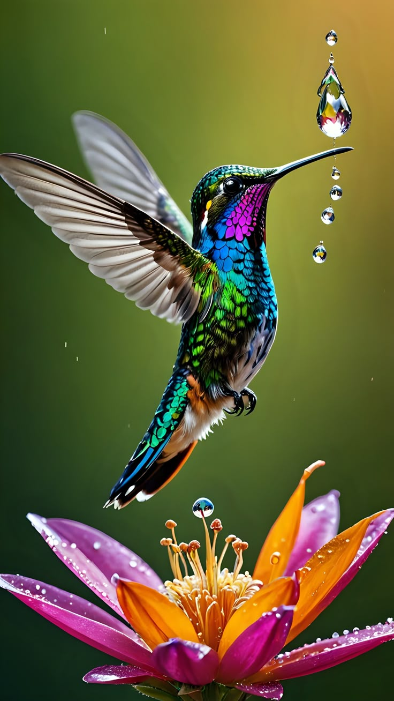

Nombre común: Colibrí
Nombre científico: Trochilidae
Clase: Aves
Vida media en libertad: 3 a 5 años
Tamaño: 7.5 a 13 cm

Los colibríes son aves pequeñas conocidas por su vuelo rápido y su capacidad de mantenerse en el aire batiendo sus alas a gran velocidad. Se caracterizan por sus colores brillantes y su alimentación basada principalmente en néctar, aunque también consumen pequeños insectos.
Para más información, puedes consultar: Wikipedia - Trochilidae